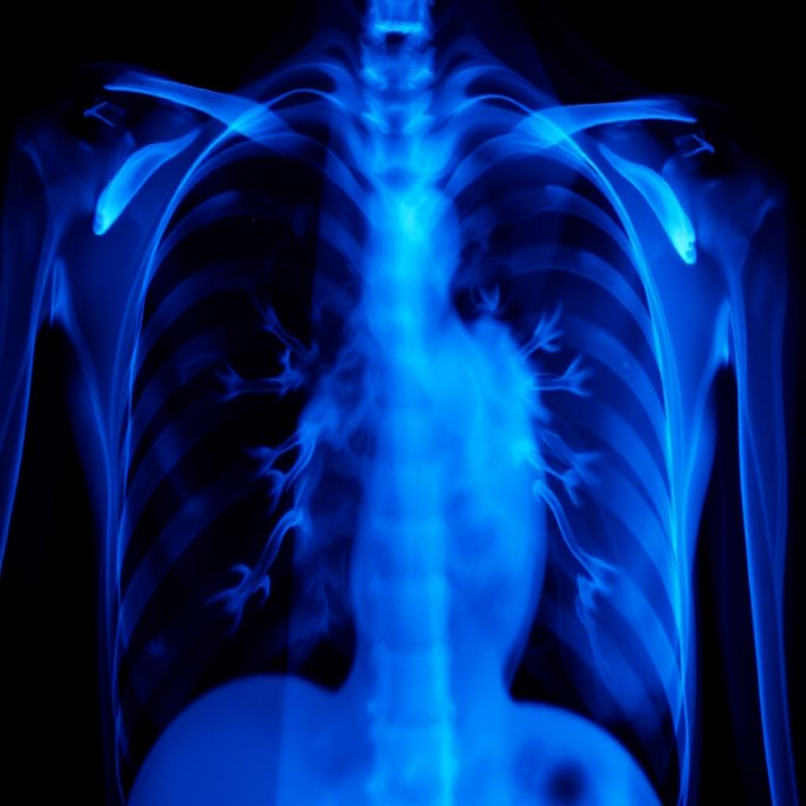

AI-Driven Healthcare Web App
Project description here.
The AI Healthcare Web App is a powerful platform that uses AI to analyze medical data, including test reports, chest X-rays, diabetes tests, stroke assessments, and blood pressure readings, to predict diseases and provide valuable health insights. It offers features like disease prediction,and blood test analysis, empowering users to make informed healthcare decisions.
By integrating advanced machine learning algorithms, the app enhances early diagnosis and personalized treatment planning.
Portfolio